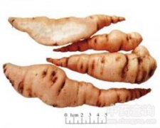

地黄

拼音
Dì Huánɡ
别名
地黄、野地黄、酒壶花、山烟根
来源
本品为玄参科植物地黄Rehmannia glutinosa Libosch. 的新鲜或干燥块根。秋季采挖，除去芦头、须根及泥沙，鲜用；或将地黄缓缓烘焙至约八成干。前者习称“鲜地黄”，后者习称“生地黄”。
生境分布
无生境分布数据
药材特点
无特点数据
性状
鲜地黄：呈纺锤形或条状，长8～24cm，直径2～9cm。外皮薄，表面浅红黄色，具弯曲的纵皱纹、芽痕、横长皮孔及不规则疤痕。肉质，易断，断面皮部淡黄白色，可见橘红色油点，木部黄白色，导管呈放射状排列。气微，味微甜、微苦。 生地黄：多呈不规则的团块状或长圆形，中间膨大，两端稍细，有的细小，长条状，稍扁而扭曲，长6～12cm，直径3～6cm。表面棕黑色或棕灰色，极皱缩，具不规则的横曲纹。体重，质较软而韧，不易折断，断面棕黑色或乌黑色，有光泽，具黏性。无臭，味微甜。
性味
鲜地黄：甘、苦，寒。 生地黄：甘，寒。
功能主治
鲜地黄：清热生津，凉血，止血。用于热病伤阴，舌绛烦渴，发斑发疹，吐血，衄血，咽喉肿痛。 生地黄：清热凉血，养阴，生津。用于热病舌绛烦渴，阴虚内热，骨蒸劳热，内热消渴，吐血，衄血，发斑发疹。
用法用量
鲜地黄：12～30g。生地黄：9～15g。
化学成分
无化学成分数据
药理作用
1：无药理作用数据
摘录
《中国药典》